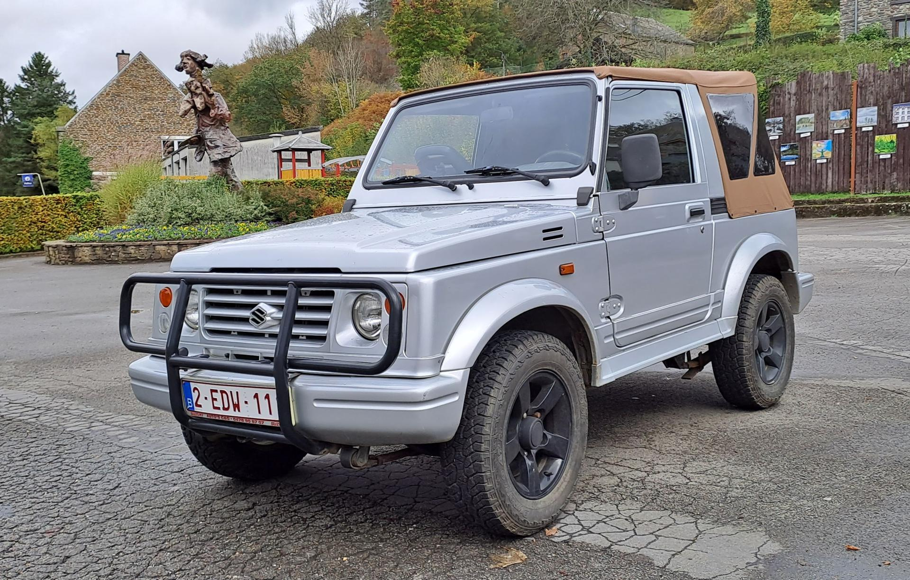
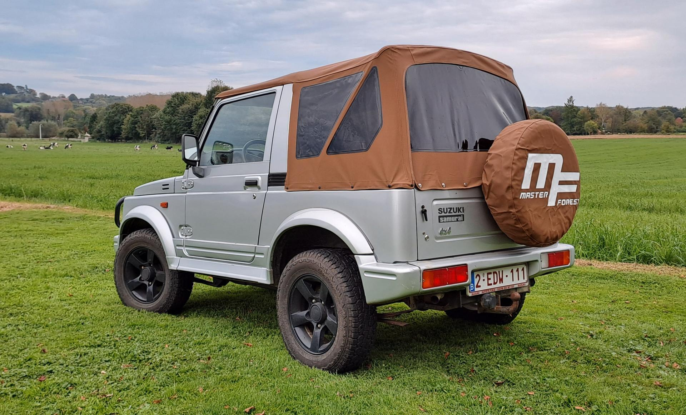
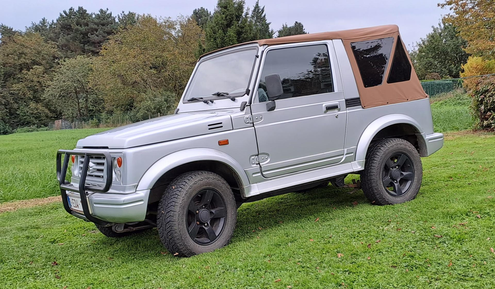

1981 – 1998 · Compacte terreinwagen
Licht, simpel en bijna onverwoestbaar. De kleine 4×4 die in veel landen uitgroeide tot een cultobject - en bewees dat terreinvermogen niets te maken heeft met gewicht.

De legende in het kort
De Suzuki Samurai is een compacte terreinwagen die bekendstaat om zijn eenvoud, lichte gewicht en bijna onverwoestbare reputatie. Gebouwd van 1981 tot 1998, groeide hij in veel landen uit tot een volwaardig cultobject.
Waar moderne SUV's zwaarder, groter en duurder worden, bleef de Samurai trouw aan zijn filosofie: zo licht mogelijk, zo simpel mogelijk, en altijd klaar voor het pad dat er niet is. Op zachte ondergrond - modder, zand, smalle paden - wint hij vaak van veel zwaardere concurrenten.
Vandaag de dag blijft hij populair bij avonturiers, hobbyisten en verzamelaars, en is zijn invloed nog altijd te zien in de latere Jimny-generaties.

Herkomst & naam
Het model werd in Japan en Europa verkocht als Suzuki SJ (SJ410 en SJ413). In Spanje produceerde Suzuki hem in samenwerking met Santana Motor onder de naam Santana. Pas op de Noord-Amerikaanse markt, waar hij in 1985 werd geïntroduceerd, kreeg hij zijn beroemde naam: Samurai.
Onder de motorkap
De Samurai is een schoolvoorbeeld van robuuste, eenvoudige techniek. Geen complexe elektronica, geen kwetsbare onderdelen - alleen wat nodig is om overal te komen en makkelijk zelf te herstellen.
Starre assen voor en achter op een laddersasis: simpel, sterk en eeuwig herstelbaar.
Robuuste bladvering voor en achter, ontworpen om zwaar werk te verdragen.
Low range voor serieus terreinwerk: meer koppel, minder snelheid, maximale grip.
Viercilinder (SJ413) van ongeveer 63 pk, later ook met injectie.
Het lage gewicht maakt hem op zachte ondergrond bijzonder behendig.
Uitstekend wendbaar, goedkoop te onderhouden en eindeloos aanpasbaar.

1988 · De schuddelem
In 1988 publiceerde het Amerikaanse tijdschrift Consumer Reports een artikel waarin het stelde dat de Samurai bij bepaalde manoeuvres gevoelig was voor kantelen. Wat volgde, is tot op de dag van vandaag één van de bekendste conflicten tussen een fabrikant en een consumentenorganisatie.
Consumer Reports meldt kantelgevoeligheid bij bepaalde manoeuvres. De publicatie landt als een bom in de Amerikaanse markt.
Suzuki spant een rechtszaak aan wegens smaad tegen het tijdschrift. De zaak sleept zich jarenlang voort.
De verkoop in de VS zakt flink, maar een trouwe schare aanhouders vindt de kritiek overdreven en blijft de Samurai liefhebben.
Het conflict blijft een van de bekendste voorbeelden van een strijd tussen fabrikant en consumentenorganisatie - en deed de legende van de Samurai alleen maar groter worden.
Waarom hij blijft
Meer dan een decennium na het einde van de productie rijdt de Samurai door - en groeit de community. Dit is waarom.
Lichter en kleiner dan de meeste concurrenten, en daardoor vaak beter in modder, zand en smalle paden.
Weinig elektronica, weinig om kapot te gaan - makkelijk zelf te herstellen met een sleutelset.
Een enorme aftermarket voor liften, grotere banden, motorswaps en andere ombouwen.
Een rauwe, ongepolijste rijervaring die moderne SUV's niet meer bieden.
De Suzuki Samurai bewijst dat een terreinwagen niet groot, zwaar of duur hoeft te zijn om capabel te zijn. Hij blijft populair bij avonturiers, hobbyisten en verzamelaars - en zijn invloed is nog altijd te zien in de latere Jimny-generaties.
In beeld
Een blik op de Samurai in al zijn gedaanten. Klik op een foto om hem te vergroten.